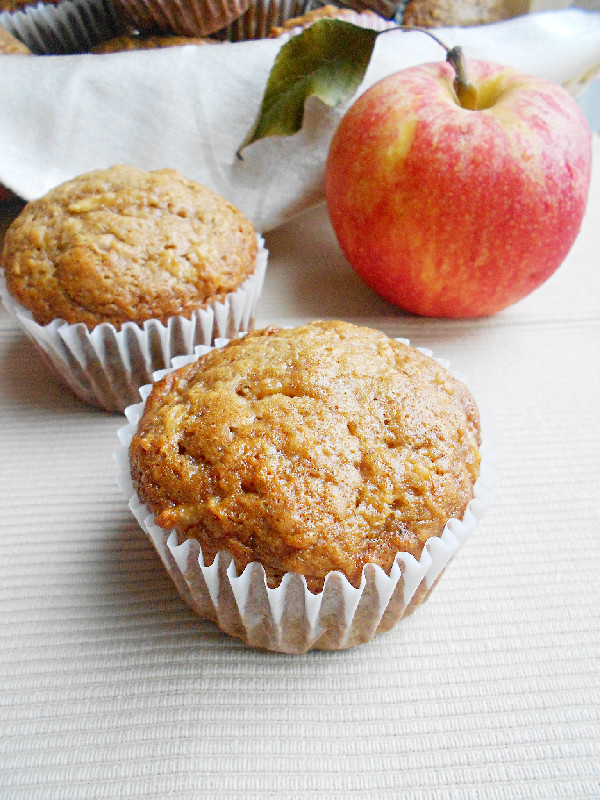

back to Recipes
Muffins

Description
Every single aspect of them is on point. Their warm comforting Fall flavors, their moistness, their fluffiness, their sweetness, their texture, even their appearance.
Ingredients
- 2 cups all-purpose flour
- 1 and 1/2 teaspoons baking soda
- 3/4 teaspoon baking powder
- 1/2 teaspoon salt
- 2 teaspoons cinnamon
- 1/2 teaspoon ginger
- 1/4 teaspoon nutmeg
- 2 cups shredded apple (about 3 medium apples)
- 1 cup granulated sugar
- 1/2 cup applesauce
- 1/4 cup canola oil
- 3 eggs, lightly beaten
- pinch of vanilla powder (or 1 teaspoon vanilla extract)
Steps
- Preheat oven to 350 degrees F. Line a muffin tin with baking cups and set aside.
- In a large mixing bowl, whisk together the flour, baking soda, baking powder, salt, and spices. In another bowl, mix together the shredded apple, sugar, applesauce, oil, eggs and vanilla. Gently stir the wet mixture into the dry ingredients until just combined. Be careful not to overmix.
- Fill the baking cups 2/3 full and bake for 18-20 minutes, or until a toothpick inserted in the center comes out clean. Let the muffins cool in tin for 5 minutes, then transfer to a wire rack to cool completely.
Credit to blog